5. 1st Bug - hunt via kubernetes
Hunting via the kubernetes road#
- Open the Kubernetes App > You'll see a cluster with the name "codespace-xxxx". That's your Kind cluster being fully observed.
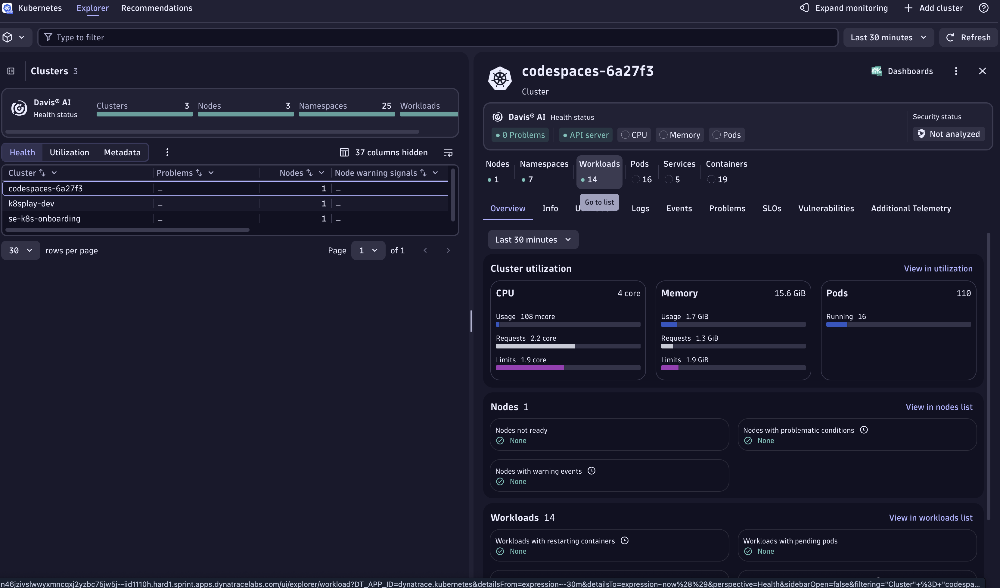
-
On the right hand side, click on Workloads, the Workloads Page will open.
-
Select the
todoappworkload.
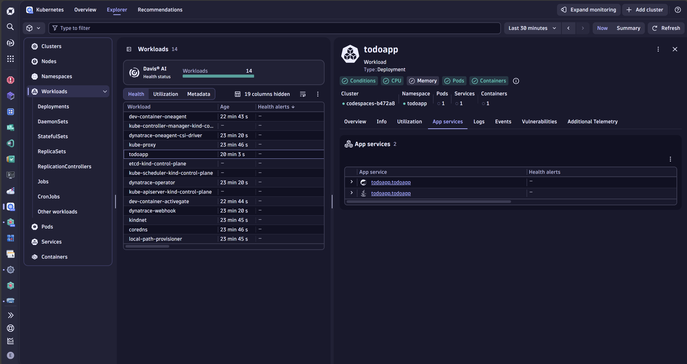
- On the Overview in the right hand side, scroll down and open the
Servicesapp. Dynatrace groups telemetry from distributed traces and spans into "Services" for you!
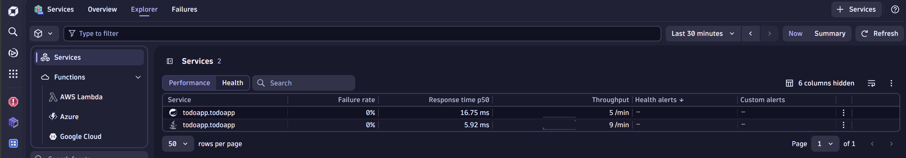
- Click on the TodoController service and then on the right corner
View Traces
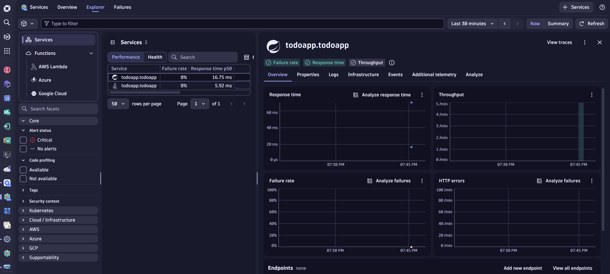
- This will open all the traces that went through your application... wow!
As you can see, there are traces with the name clearCompletedTodos that just took a couple ms and are not throwing any errors. The response code is 200, but since this is a bug it does not mean the application is working as expected.
This specific span it was just 2.98ms. On the right hand side, you can see the Tracing details, look how much data was captured automatically 🤩.
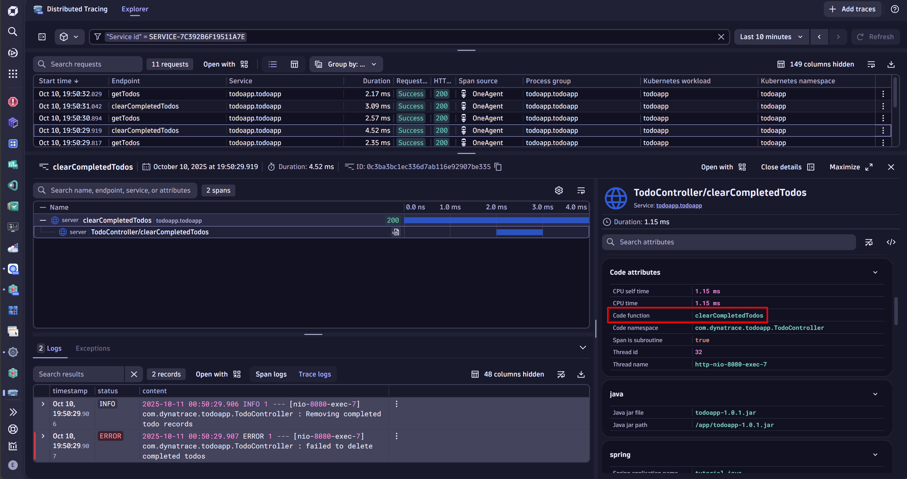
In the second node of the span, in the Code Attributes section, we can see the Code function: clearCompletedTodos and the Code Namespace: com.dynatrace.todoapp.TodoController
Now we know which method and which package! Let's put our Developer Hat 🎩 and open the Live Debugger.
Open Live Debugger#
Type CTRL + K > Live Debugger for super fast access to the Live Debugger application.
First we want to cuztomize our debuggin session to match the workloads where we want to set a non-breaking breakpoint. Click on the pencil icon to "Customize your debug session" so we can add the filters namespace:todoapp k8s.workload.name:todoapp. This information was also available in the trace that we just took a look at. There are multiple filters you can add, important here is to have a filter that can be reused and is not specifc to an instance in case the pods a recycled and you want to make sure you are always setting breakpoints to a specific workload in a specific cluster (or multiple).
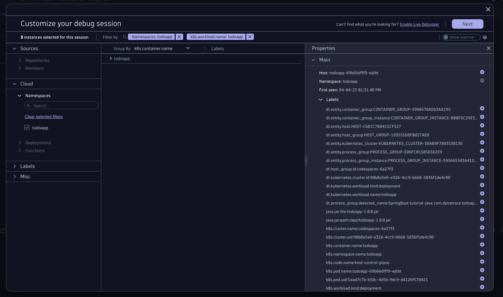
Connect the Github repository (manually)#
Once you click next, no repository was found for this application (this is because no repo was configured). Let's add it manually.
-
Click on the + sign to add a new one 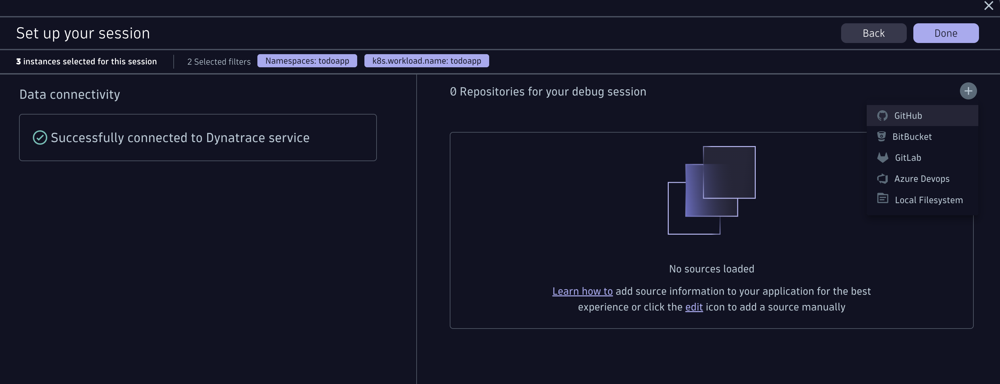
-
Click on authenticate. It'll open a window where you'll authenticate with your GitHub personal account.
Why? we take security very seriously, meaning the source code will never leave the browser, the client.
- In organisation you enter:
dynatrace-wwse - In Repository you enter this repo:
enablement-live-debugger-bug-hunting
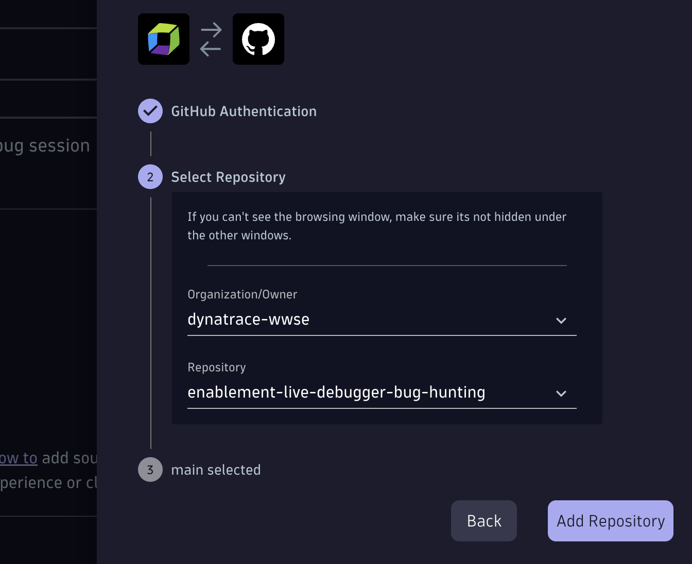
- Click on Done!
Now you are all set! you should see an image like this:
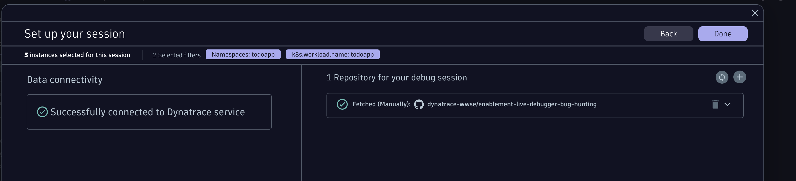
Navigate to the TodoController.java#
You have multiple ways to open the TodoController.java. Let's say you know the code, then easily you'll navigate to it by opening the Source Code menu on the left pane, navigate to: todoapp > src > main > java > com > dynatrace > todoapp > TodoController.java
if you don't know the structure, use the search and type TodoControllerit'll search for all matches, you'll see the Class file so you can open it.
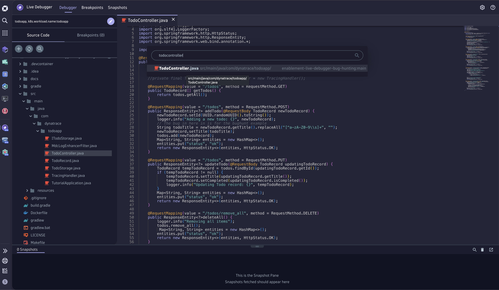
Now let's search for the Method clearCompletedTodos. You'll find the Method definition at line 72.
72@RequestMapping(value = "/todos/clear_completed", method = RequestMethod.DELETE)73public ResponseEntity<?> clearCompletedTodos() throws InterruptedException {
We need to set a non-breaking breakpoint on running code inside the method, for this I recommend to start setting it on the return code which is at line 92. This way we gather the values of the variables before they are sent back to the client.
92return new ResponseEntity<>(entities, HttpStatus.OK);
You can set a non-breaking breakpoint by clicking just to the left of the line number. Set it and wait for the status to change to Active.
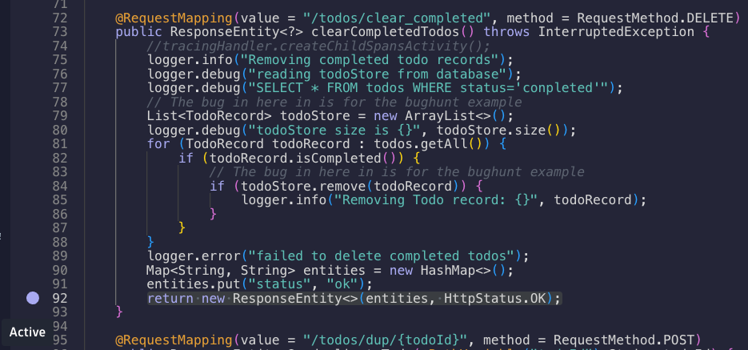
Go back to the TODO app and clear again on "Clear completed"
Return to the Live Debugger and see the Snaphot captured, open it and see all the variables that were captured with their values.
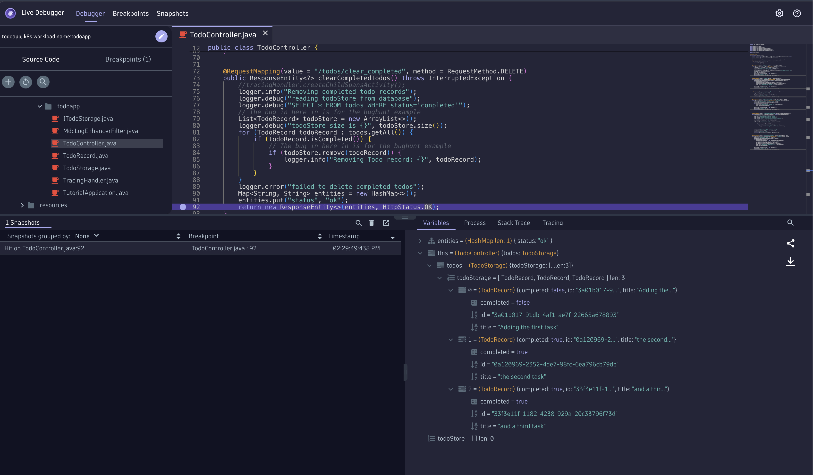
Do you see the bug? can you understand what happened and why the completed todos are not deleted? We can see two variables, the todos with a length of 3 and todoStore with a length of 0.
In line 84 todoStore.remove(todoRecord) the variable todoStore is a newly instantiated variable. This is a mistake, it should be replaced by the variable todos so the function can succesfully remove all cleared tasks!
Yay! we found the first bug!!!
Seeing is believing 🤩
Did you notice? With Dynatrace we were able to navigate from the Kubernetes Cluster all the way down to the workload, it's traces cotinuing down to the specific method and namespace of the called function and variables. With one click on the method we were able to set a non-breaking breakpoint in our production application deployed in a Kubernetes Cluster where with a single snapshot we were able to identify the bug. Debugging Kubernetes Clusters has never been so easy!!! And in Production!! 🤯